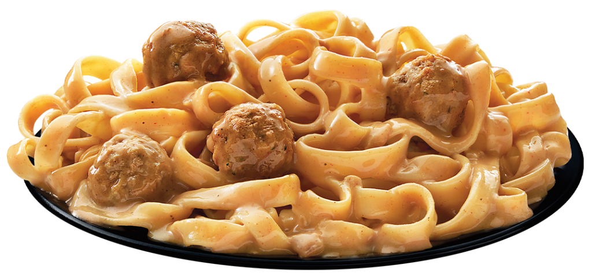

Swedish Meatballs

Meatballs with a Scandinavian soul
Köttbullar för alla - Meatballs for all!
Ingredients
- 1lb ground beef
- 3.5oz ground pork
- 1 medium onion, finely chopped
- 2 cloves of garlic, minced
- 1 egg
- 1 tablespoon all-purpose flour
- 1 teaspoon salt
- 1/4 teaspoon black pepper
- 1/4 teaspoon nutmeg
- 1/4 teaspoon white pepper
- 2 tablespoons milk
- 2 tablespoons butter
- cups beef broth
- 1 cup heavy cream (optional)
- Fresh parsley, chopped (optional)
Ingredients
- In a large mixing bowl, combine the ground beef and pork. Use your hands
or a wooden spoon to mix until just combined.
- Add the chopped onion, minced garlic, egg, flour, salt, black pepper,
nutmeg, and white pepper to the meat mixture. Mix until everything is well
incorporated.
- Cover the mixture with plastic wrap and refrigerate for at least 30
minutes or overnight to allow the flavors to meld.
- When you're ready to cook the meatballs, preheat your oven t
200°C/400°F.
- Use your hands or a spoon to shape the meat mixture into small balls,
about 1 1/2 inches (3.8 cm) in diameter. You should end up with around
20-25 meatballs.
- Place the meatballs on a baking sheet lined with parchment paper,
leaving some space between each meatball to allow for even cooking.
- Dot the top of each meatball with butter.
- bake the meatballs in the preheated oven for 12-15 minutes or until
they're cooked through and lightly browned.
- While the meatballs are baking, heat the beef broth in a large saucepan
over medium-low heat
- Once the meatballs are done, remove them from the oven and carefully
place them into the simmering beef broth
- Simmer the meatballs in the broth for about 5 minutes to coat them
evenly.
- If you want to add an extra layer of creaminess, stir in the heavy
cream.
- Serve the Swedish Meatballs hot with your choice of sides, such as Lingonberry jam or mashed potatoes!